你可以给每一个人打电话，但是没有一个人能与之聊天。城市建筑那么多，但是他们无处可去。
——剧本《地狱》
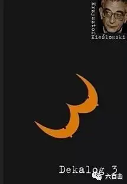
《十戒》中的第三个故事发生在圣诞节前夕的平安夜，女主爱娃与男主雅努兹在教堂相遇，而雅努兹是爱娃的前男友，如今已经是两个孩子的父亲。从教会离开后，雅努兹同家人一起在家中过平安夜，忽然爱娃来找雅努兹，哭着说自己的丈夫爱德华失踪了，请求雅努兹和他一同寻找自己的丈夫，这让雅努兹非常为难，但最后还是答应了爱娃的请求，他向妻子撒谎，说自己的汽车被人偷了，他需要出去寻找。在这个安详的平安夜中，雅努兹抛下了家人和爱娃一起去了醉汉收容所、医院、车站，但是却一无所获。天马上就要亮了，爱娃告诉了雅努兹真相，她早已经和爱德华分开，自己已经独居多年，这个平安夜她再也无法忍受孤独，于是和自己打赌，如果自己能够想办法让雅努兹陪自己度过平安夜，那么，她就不选择自杀，说完后，爱娃将口袋中的毒药丢在了地上........
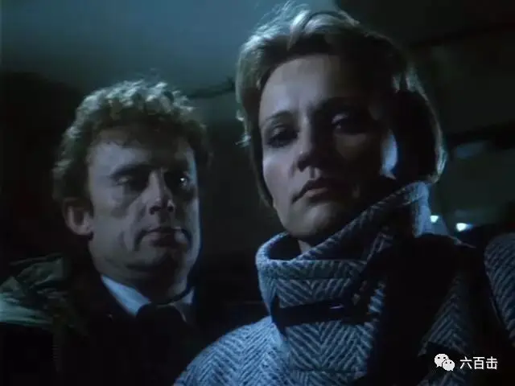
一、你当守安息日
本片探讨的诫命是当守安息日，所以基氏为了增强处境感，将时间设定在平安夜，在这个内心最应给平安的夜晚，两位主角却跌入到独孤和不安之中。 这部电影的故事并不复杂，但是却被基耶斯洛夫斯基用剥洋葱的方式处理的意味深远，基氏通过这部电影将人生的真相一层一层的慢慢剥开——我们是彻底孤独的，我们已经太习惯用谎言去掩饰自己的需要，随着一天天的长大，我们再没有能力像小时候那样向别人敞开，当爱娃的谎言被一层层剥掉的时候，我们看到了包在爱娃心底里的那颗异常敏感且需要被爱被关怀的心，爱娃是值得同情的。这也是为什么基氏《十诫》编织的困境看似冰冷但是总能让我们感到一丝温暖的原因，基氏在揭示当代人的道德困境上客观冷静、细致入微，在他不停的质问之下，包含的是人类对于爱、希望、公义的深切渴望，当电影触及到这个层面的时候，一定会让每个人产生共鸣和感动。
二、谎言
两人用谎言在平安夜聚在了一起，而两人的谎言也颇有象征意味，爱娃撒谎说自己的丈夫爱德华失踪了，其实背后在说这个平安夜没有了爱自己的人，而雅努兹的谎言是自己的车丢了，而他是一个出租车司机，所以车对于他来说是非常重要的，也就是说，这个谎言象征着一个很重要的东西丢了。
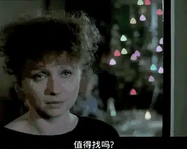
而从电影刚开始，我们可以看到雅努兹在扮演圣诞老人之后，表情的疲惫和麻木，也许对于雅努兹来说，他早已经丢失了对于生活的激情。在这个夜晚，两人生命中很重要的东西都是缺失的，两人都说了谎，但是某种程度上却是真实的。
随着一次次的寻找无果，观众也和雅努兹不禁怀疑，爱娃说的是真的么？而爱娃谎言被揭穿的场景，基氏处理的非常细腻感人。医院寻找未果，两人打算回到爱娃家中，看爱德华是不是已经自己回到家中。爱娃让雅努兹在门外等，自己先进入屋内，为了不让雅努兹知道自己独身的处境，她急忙在屋子里挂起男人用的呢子大衣。
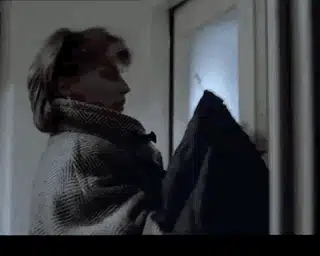
接着我们来看基氏怎么用三个类似的镜头来揭穿爱娃的谎言的，镜头都是从放置剃须刀的动作摇到镜子上，然后在镜中我们看到了主人公的表情
1、刚开始，爱娃在卫生间专门放了剃须刀，表情紧张
2、爱娃让雅努兹进入屋内，雅努兹若无其事的端详了屋内的一切，但还是在卫生间发现了真相，当他拆下剃须刀的刀片时，发现刀片根本没有开锋，雅努兹表情复杂。
3、爱娃再次进入卫生间，知道自己放的剃须刀根本不能用，她知道自己的谎言被雅努兹发现后，神情落魄，令人心碎
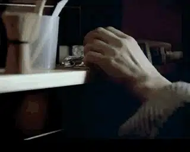
这三个镜头处理的非常高明，不需要过多的言语，我们都能看到爱娃的脆弱以及真相被发现后的无助，尤其是最后一次，爱娃已经没有勇气看向镜子中的自己。镜子不仅能够让观众看到主角的表情，透过镜子，更是建立起主角撒谎与自己内心真实的脆弱之间的张力。镜子的巧妙使用，同样体现在电影的刚开始的地方，雅努兹正要打开小区的门，门刚转动，爱娃的身影忽然出现在镜中，很有美感。
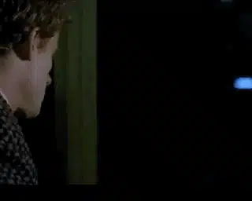
爱娃担心谎言被揭穿之后，雅努兹便没有了继续和她在一起的可能。但是雅努兹没有去戳穿谎言，继续和爱娃一同寻找爱德华。 显然，雅努兹对于爱娃脆弱的谅解让爱娃感受到了温暖，最后放弃了自杀。
三、孤独
而基氏在孤独的表现上是非常出色的，他综合运用了镜头视角、色彩、光、以及一个疯子去刻画孤独和营造气氛。
1、窥看视角下的孤独
电影在表现孤独感的时候，总是将孤独的一方放在窗户、车窗后面，让孤独的一方窥看幸福的一方。让我们首先看一下电影刚开始，雅努兹穿着圣诞老人衣服回家，在楼道中碰到了第一戒的主人公，也就是那位因为笃信理性而丧失可爱儿子的教授。
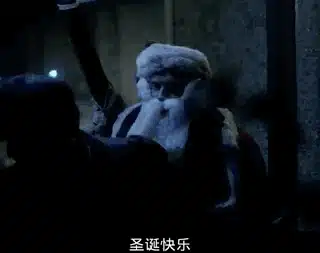
在这个平安夜里，别人家其乐融融，而自己的可爱儿子巴博却葬生湖底，教授不由地透过窗户看到了雅努兹一家人的快乐，这个时刻，他的心是有多悲痛！
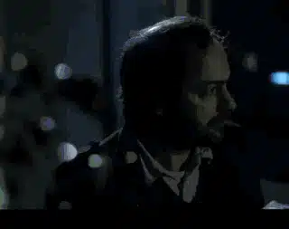
我们再来看看爱娃的孤独是如何表现的，首先是坐在车内，透过玻璃窥看这雅努兹和儿子在院子里嬉戏。
别人家的快乐总是被窗户遮挡在另一边，爱娃只是一人置身于冰冷中。
爱娃在窗外窥看雅努兹，主观视角背后的爱娃仿佛置身于孤独的牢笼中
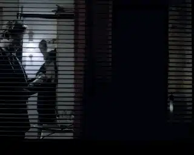
2、表现主义色彩
故事发生在圣诞节，街道和内室都充斥着红色和蓝色的霓虹灯，神奇的是，本片中，爱娃的脸上总是被蓝色的灯光笼罩，象征着爱娃的孤独，而雅努兹则被红色灯光笼罩，象征着他心理的不安，这些细节，观众或许未曾察觉，但却已经悄无声息的营造了电影该有的气氛，这也是基氏电影厉害之处。
红色灯光笼罩下的雅努兹
我们再来看一看基氏是怎么用光去表现情感的，首先来看一下，当雅努兹的妻子从窗户看着雅鲁兹离开自己时的场景，明亮的光线照亮了她的面部，面部尤其是眼部附近亮度的忽然提高，一下子放大了雅努兹妻子内心的疑虑和失望，看着让人心疼。
而在表现爱娃独身的时候，爱娃房间是高反差的低调摄影，不同于别人家中灯火通明的高调，爱娃房间中弥漫着孤独的气氛。
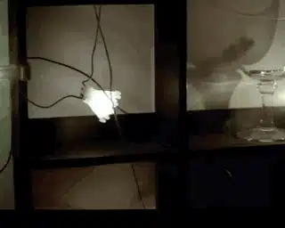
3、天使和疯子
而本片中再次出现了每部电影都出现的天使人物，这次他是一个电车乘客，目睹了爱娃和雅努兹驾车狂奔的景象。
本片还多次出现了一个疯子，他拖着圣诞树，口里念着“家呢？我的家在哪里”，这不正是爱娃、雅努兹的心灵写照么？
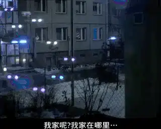
四、真正的安息
这一晚，雅努兹对爱娃是包容的，也挽救了爱娃的性命，这是电影里的一丝温暖
令人感到温馨的告别
但是虽然用谎言暂时获得了“安息”，不过谎言让雅努兹的妻子受伤，谎言也无法真正改变爱娃的孤独，她仍然独身，孤独和空虚随时都会袭来，这样的安息虽然温暖但却短暂。可惜的是，从刚开始他们在教会中的心不在焉，我们已经知道他们并不明白安息日的意义，并不明白在很久以前的这个夜晚有一位婴孩为他们而降生了，为了无数个孤独的“爱娃”和“雅努兹”撇下了宝座，尝尽了苦杯，并最后流出了宝血，他胜过了一切隔阂和空虚，不论是何种孤独都可以来到他面前得到真正的安息。这也许是基耶斯洛夫斯基道德焦虑，内心难以平安的悲剧吧。
教堂中 心不在焉的雅努兹和爱娃
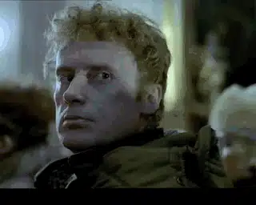
关注并回复十诫获取蓝光内封中字视频资源
相关阅读：
走近大师 | 深紫色叙事思想家——基耶斯洛夫斯基
一个唯科学主义者的悲剧
当孩子还是孩子时
没有过去的男人
这里没有挑逗你眼目情欲的小鲜肉，也没有挑动你肉体情欲的段子
更没有膨胀你今生骄傲的鸡血。
我们只在乎那些最质朴真诚的作品，在那里我们才能恢复真正的想象力
我们也坚信这才是我们真正需要的。